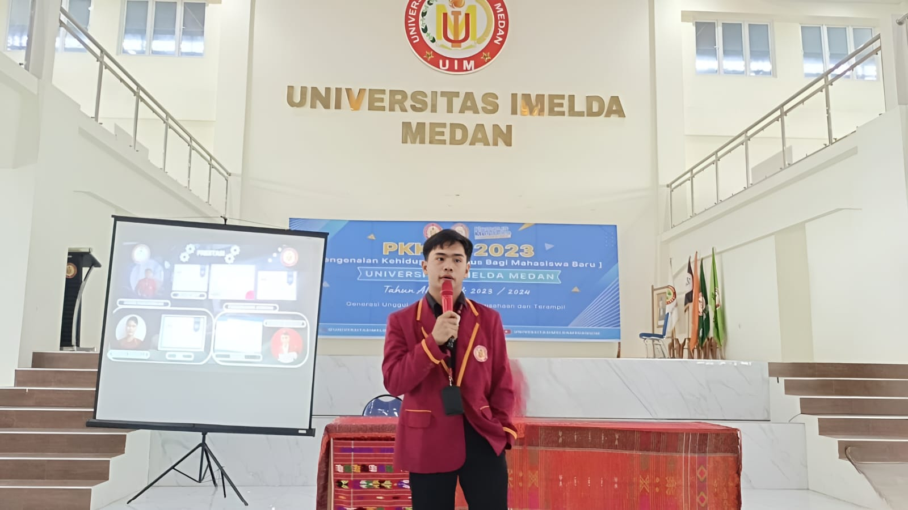
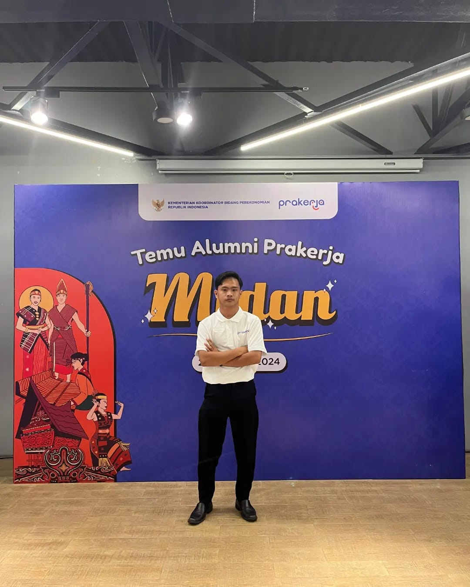

Galeri
Galeri Kenangan
Beberapa momen yang menggambarkan perjalanan, kebersamaan, dan rasa syukur selama masa kuliah hingga menjelang wisuda.

Langkah baru dimulai, membawa ilmu dan pengalaman untuk masa depan yang penuh peluang.

Aktif dalam kegiatan kemasyarakatan guna memperluas jaringan sosial.

Momen kebersamaan, penuh haru dan tawa bersama teman seperjuangan.